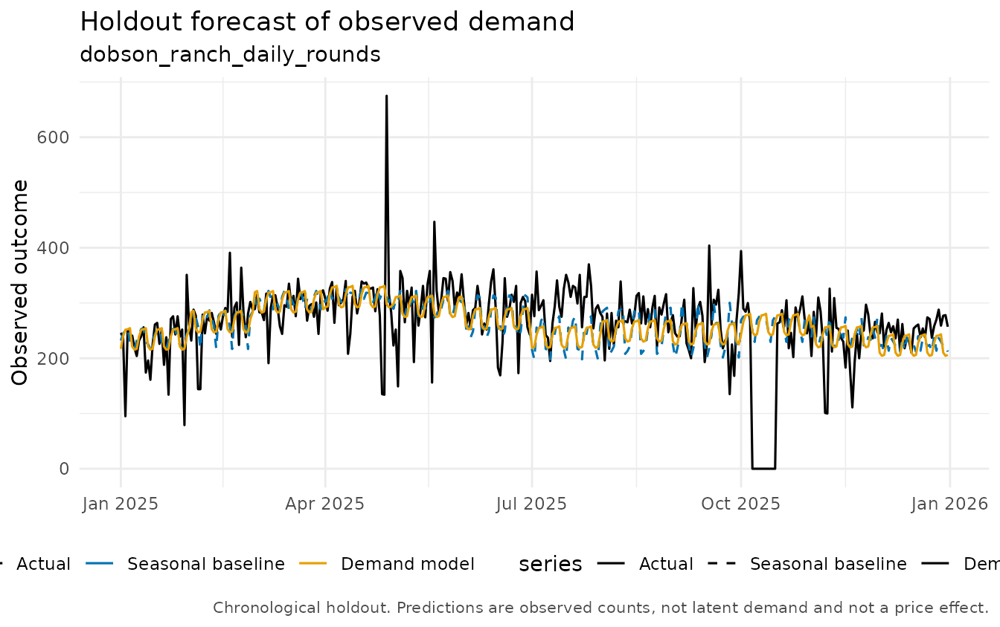
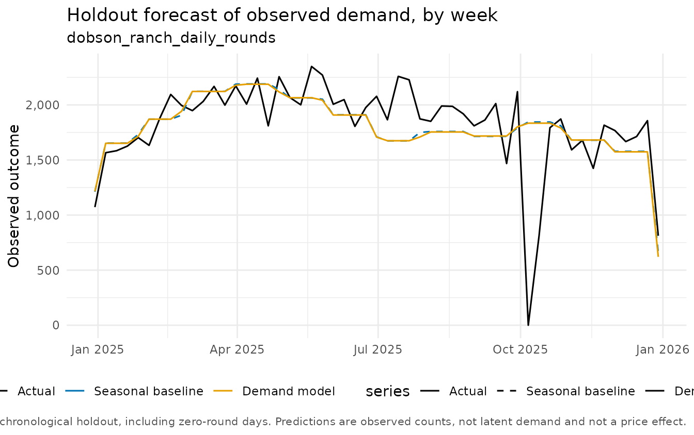

Dobson Ranch
The series is the same operating sample as the Capacity and utilization vignette: daily rows from 2021-07-01, without the isolated 2004-12-10 row and without a second copy of 2022-04-24. Zero-round days stay out of the fit. October’s are course closures. The extract does not label them, and this series does not mark them closed on its own. The weekday and month utilization table is in that vignette. The daylight estimate is stored as capacity and is not turned into unmet demand. Training is through 2024-12-31. The scored holdout is calendar 2025. Partial 2026 is excluded from the score.
demand <- dobson_rounds_demand()
attr(demand, "decisions")
#> [1] "Operating charts and the Dobson forecast use daily rows from 2021-07-01 forward."
#> [2] "Monthly totals stay in the prepared extract and are not mixed into this sample."
#> [3] "The isolated 2004-12-10 row stays in the prepared extract and the audit. It is excluded from operating charts."
#> [4] "2022-04-24 was duplicated with identical operating values. One copy is kept."
#> [5] "2024-12-10 is absent. It is not imputed and it is not recorded as zero rounds."
#> [6] "A day with zero played rounds has status zero_rounds_unknown until an operating calendar says otherwise. It is not unused sellable capacity."
#> [7] "October zero-round days are course closures. This sample does not mark them closed. The capacity vignette supplies that calendar."
#> [8] "rounds_possible remains the city's daylight estimate. It is not tee-sheet inventory."
#> [9] "October zero-round days are course closures and stay out of the fit. The extract does not label them closed."
#> [10] "Forecasts store the daylight estimate as capacity. They do not add latent demand on days at or above that estimate."
dobson <- forecast_dobson_rounds(demand)
dobson$comparison
#> # A tibble: 4 × 6
#> model slice n mae rmse mean_error
#> <chr> <chr> <int> <dbl> <dbl> <dbl>
#> 1 seasonal_baseline all_rows 365 45.4 71.7 -1.50
#> 2 demand_model all_rows 365 45.3 71.4 -1.98
#> 3 seasonal_baseline rows_eligible_for_fit 354 38.7 56.3 -9.65
#> 4 demand_model rows_eligible_for_fit 354 38.7 56.5 -10.0Read rows_eligible_for_fit when the question is open-day
play. Read all_rows when closure days remain in the score.
The baseline is the training mean for that weekday and month. The demand
model is observed rounds on weekday and month. A lower error is a better
description of observed play. It is not evidence for a price change.
plot_forecast(dobson)
plot_forecast(dobson, interval = "week")
dobson$limits
#> [1] "The forecasts predict the observed outcome. They do not estimate latent demand on sold-out or above-capacity days."
#> [2] "Predictions are not capped at capacity, and days above capacity are not revised upward."
#> [3] "The volume scenario, if used, is an assumption supplied by the user. It is not a price elasticity."
#> [4] "Rows flagged for exclusion stay in the all-rows score and are omitted from the eligible-rows score. For Dobson Ranch the October rows are course closures. The extract does not label them closed. A prediction on one of those dates is expected play if the day had been open."The same two fits can be read for a chosen week. March 3–9, 2025 is inside the holdout, so the horizon is the number of days after 2024-12-31. The band is the 10th and 90th percentile of eligible 2025 errors. Green-fee revenue multiplies the rounds estimate by training yield. That yield is not a posted price. No weather term is included. Passing weather observed on the day is refused when the role is a forecast.
week <- estimate_observed_activity(seq(as.Date("2025-03-03"), as.Date("2025-03-09"), by = "day"))
week$estimates[
c("date", "horizon_days", "actual_rounds", "seasonal_baseline_rounds",
"demand_model_rounds", "demand_model_rounds_p10", "demand_model_rounds_p90",
"demand_model_green_fee")
]
#> # A tibble: 7 × 8
#> date horizon_days actual_rounds seasonal_baseline_rounds
#> <date> <int> <dbl> <dbl>
#> 1 2025-03-03 62 283 308.
#> 2 2025-03-04 63 283 298.
#> 3 2025-03-05 64 269 286.
#> 4 2025-03-06 65 317 311.
#> 5 2025-03-07 66 191 322.
#> 6 2025-03-08 67 291 309.
#> 7 2025-03-09 68 314 288.
#> # ℹ 4 more variables: demand_model_rounds <dbl>, demand_model_rounds_p10 <dbl>,
#> # demand_model_rounds_p90 <dbl>, demand_model_green_fee <dbl>The participation spike on 2025-04-28 and the month-end range-revenue extremes are reviewed in the Dobson Ranch vignette. They are not given an event explanation here.
A hypothetical tournament
The Cedar Municipal Classic is invented. Its ticket counts are not PGA sales and not Mesa revenue. The same split, baseline, score, and volume scenario are used. The demand model is fit separately, on weekday and days remaining until the event.
tickets <- forecast_tournament_tickets()
tickets$comparison
#> # A tibble: 2 × 6
#> model slice n mae rmse mean_error
#> <chr> <chr> <int> <dbl> <dbl> <dbl>
#> 1 seasonal_baseline all_rows 90 7.89 9.99 -0.678
#> 2 demand_model all_rows 90 6.78 8.52 0.756
apply_volume_scenario(tickets$predictions$demand_model, volume_change = -0.05)
#> Price and volume scenario
#> The totals apply the assumptions below. They are not an estimated demand response.
#>
#> - volume_change rescales the forecast. It is not estimated from the series.
#> - This rescaling is not a price elasticity and does not recover latent demand above capacity.
#>
#> # A tibble: 1 × 4
#> volume_change baseline_total scenario_total change_total
#> <dbl> <dbl> <dbl> <dbl>
#> 1 -0.05 10255 9742. -513.The ticket scores show that the workflow transfers. They do not describe a real tournament.